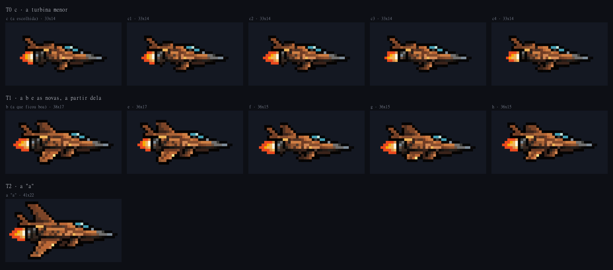
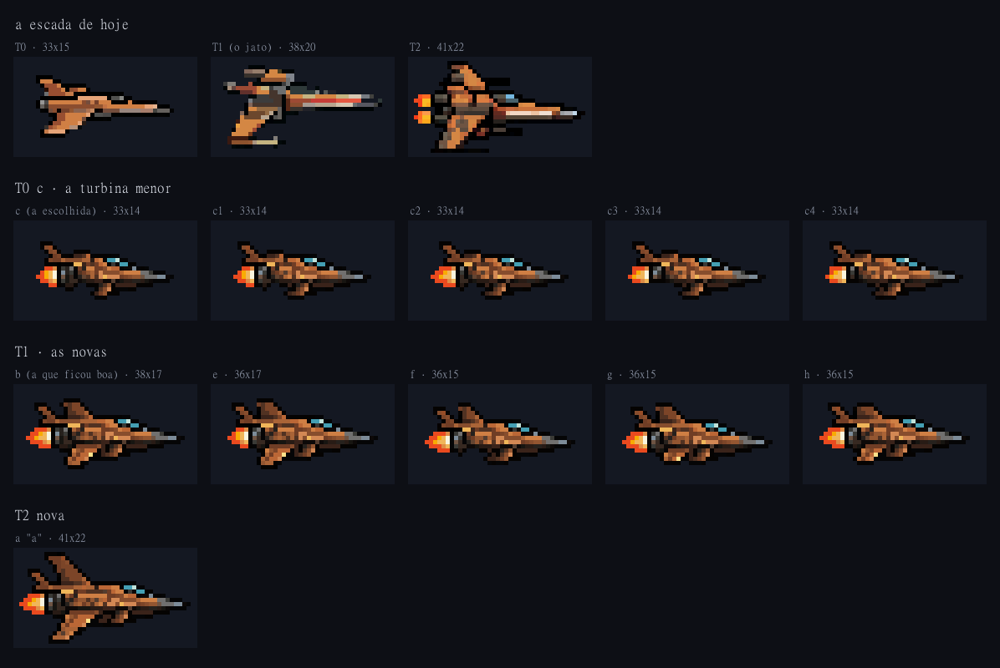
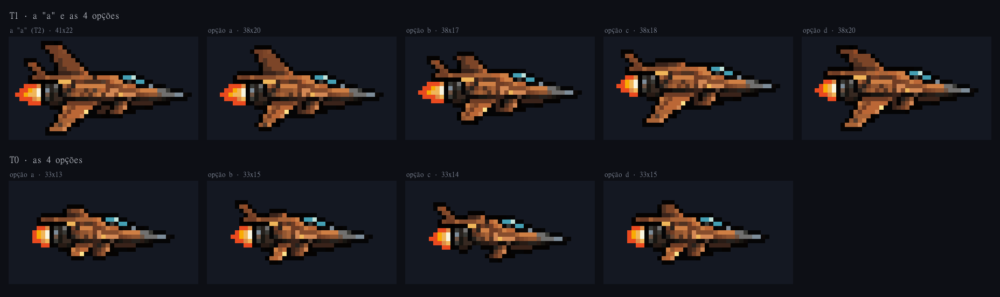
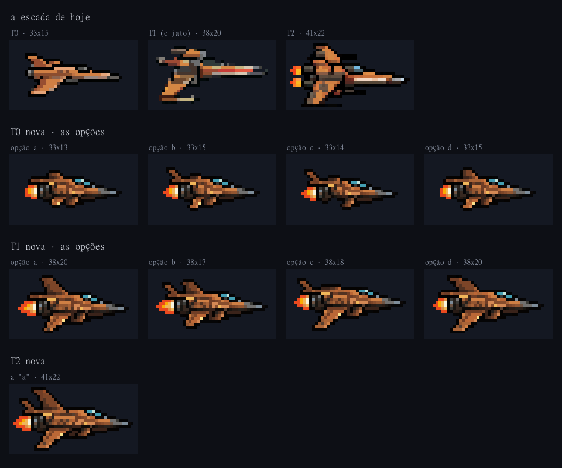

A escada nova, tirada da laranja "a"
25/10/2026 · ← os seus concepts · Só concepts. Nada entrou no jogo (o seu pedido: "quero ver as gerações ou concepts da T0 e T1 antes de qualquer implementação in-game").
Rodada 1b — a turbina da T0 e a T1 de novo
Você: "A T0 c ficou boa, mas a turbina pode ser menor um pouco. A T1 é que precisamos refazer, pois ficaram muito parecidas com a T2 (a opção b da T1 ficou boa)."
- A turbina da T0 c: o bocal perde 1 ou 2 colunas (fica com um anel escuro em vez de dois), e em c3 e c4 também perde a linha de baixo, que pendia abaixo da barriga. O corpo ganhou de volta as colunas que o bocal perdeu, e a nave segue com 33×14.
- As T1 novas partem da b (a aleta e a asa de cima aparada) e cada uma se afasta mais da T2: todas mais curtas (36 em vez de 38) e com a turbina média, 1 coluna a menos. Assim a turbina também cresce com o tier: pequena na T0, média na T1 e inteira na T2.
- A chama ainda é a pintada da "a". Na rodada 2 ela é desenhada à mão, quadro a quadro, no tamanho do bocal escolhido. Se a sua "turbina" incluía a chama, ela diminui junto.

| T0 c · a turbina | T1 · a partir da b | ||
|---|---|---|---|
| c1 | o bocal 1 coluna mais curto | e | a b, mais curta e com a turbina média |
| c2 | o bocal 2 colunas mais curto | f | a b sem a asa de baixo |
| c3 | 1 mais curto e 1 mais baixo | g | a b com a asa de baixo em toco |
| c4 | 2 mais curto e 1 mais baixo | h | a b com as duas asas menores |

O que eu vejo:
- Turbina: c4. É a menor, e a única em que o bocal para de pender abaixo da barriga. A diferença de c para c4 é pequena, como você pediu.
- T1: f. Com ela, cada tier ganha uma peça que se vê no tamanho de jogo: T0 c só com a aleta, T1 f com a aleta e a asa de cima curta, e a T2 com as duas asas inteiras.
- A g é o passo mais suave, porque guarda um toco da asa de baixo. A e ainda fica perto da T2.
O que eu preciso de você
- A turbina da T0 c: c1, c2, c3, c4, ou a c como estava.
- A T1: b, e, f, g ou h.
Depois: a rodada 2 (o motor animado nos três tiers e a pintura preta), numa folha com GIF. O jogo só na rodada 3.
Rodada 1 — as primeiras 8 opções
Como saíram: recortadas da própria "a", sem PixelLab. Cada opção tira peças da "a", fecha o contorno onde a peça saía e encurta o corpo até o tamanho do tier de hoje. Nenhum pixel mudou de cor; só saíram colunas e linhas repetidas. O nariz de agulha, a cabine e o bocal ficaram protegidos do corte.
Você escolheu a T0 c e achou as T1 parecidas demais com a T2 (a b ficou boa).

| T1 (~38×20) | T0 (~33×15) | |
|---|---|---|
| a | sem a aleta, as duas asas aparadas | os dois tocos de asa, sem a aleta |
| b | a aleta fica, a asa de cima mais baixa | uma asa (a de baixo, curta) e a aleta |
| c | sem a asa de cima, a de baixo inteira | o dardo: só a aleta, sem asas |
| d | as asas inteiras, sem a aleta, corpo curto | o toco de cima e a asa de baixo curta |
